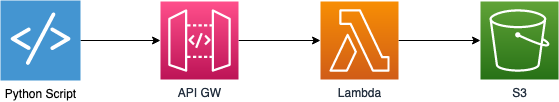
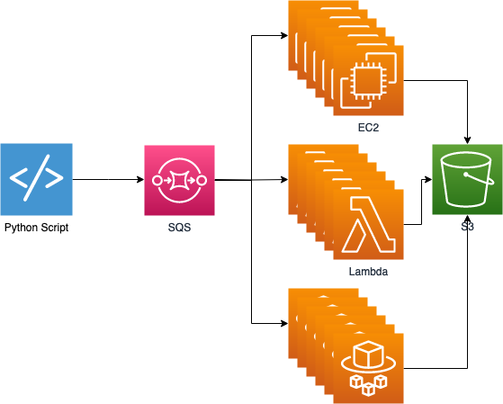
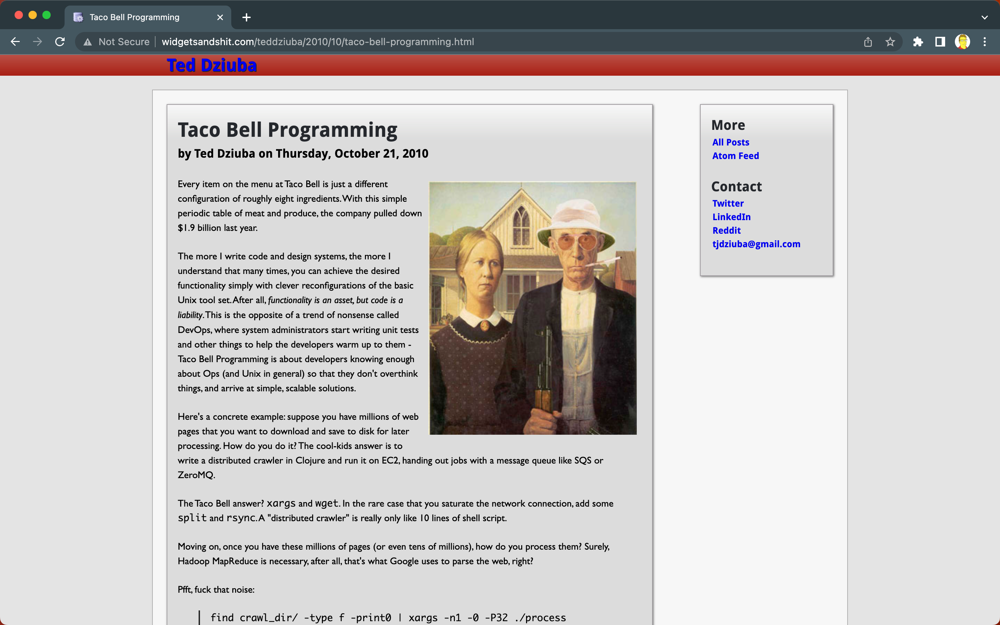
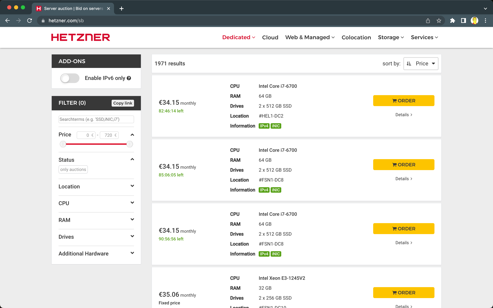
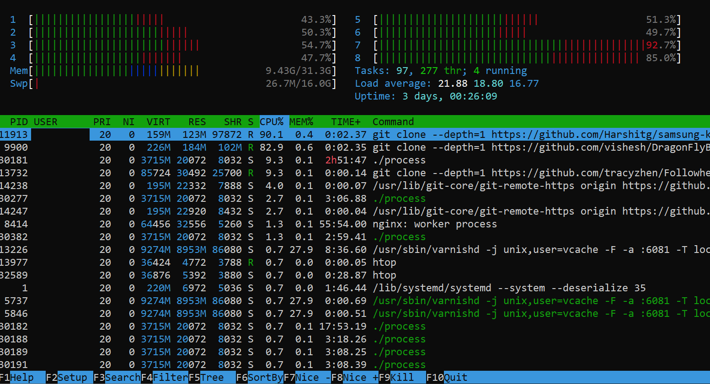
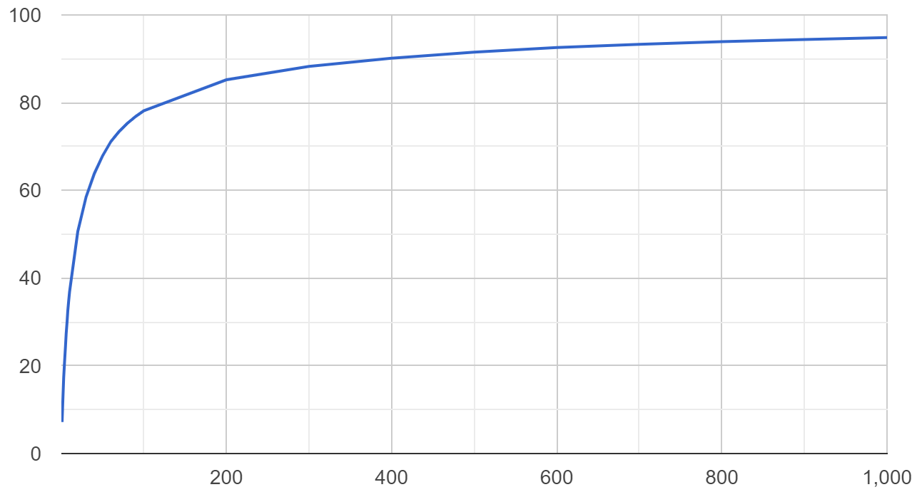
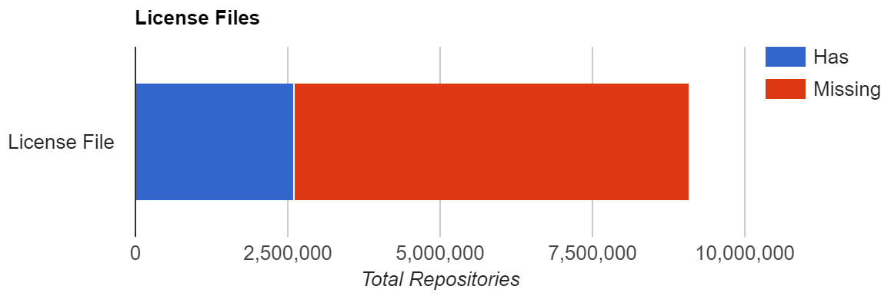

Processing 40 TB of code from ~10 million projects with a dedicated server and Go for $100
Intro?
I blog boyter.org I free software github/boyter/ I run searchcode.com also on the twitter @boyter activitypub @boyter@honk.boyter.org
Largest dataset: ~6PB
Largest table: 2 trillion rows
Highest QPS: 70,000/s under a DDoS
What?
What did I try?
What did I learn?
What worked?
The future?
Why?
Why would anyone in their right mind do this?
scc
$ scc redis
───────────────────────────────────────────────────────────────────────────────
Language Files Lines Blanks Comments Code Complexity
───────────────────────────────────────────────────────────────────────────────
C 296 180267 20367 31679 128221 32548
C Header 215 32362 3624 6968 21770 1636
TCL 143 28959 3130 1784 24045 2340
Shell 44 1658 222 326 1110 187
Autoconf 22 10871 1038 1326 8507 953
Lua 20 525 68 70 387 65
Markdown 16 2595 683 0 1912 0
Makefile 11 1363 262 125 976 59
Ruby 10 795 78 78 639 116
gitignore 10 162 16 0 146 0
YAML 6 711 46 8 657 0
HTML 5 9658 2928 12 6718 0
C++ 4 286 48 14 224 31
License 4 100 20 0 80 0
Plain Text 3 185 26 0 159 0
CMake 2 214 43 3 168 4
CSS 2 107 16 0 91 0
Python 2 219 12 6 201 34
Systemd 2 80 6 0 74 0
BASH 1 118 14 5 99 31
Batch 1 28 2 0 26 3
C++ Header 1 9 1 3 5 0
Extensible Styleshe… 1 10 0 0 10 0
Smarty Template 1 44 1 0 43 5
m4 1 562 116 53 393 0
───────────────────────────────────────────────────────────────────────────────
Total 823 271888 32767 42460 196661 38012
───────────────────────────────────────────────────────────────────────────────
Estimated Cost to Develop (organic) $6,918,301
Estimated Schedule Effort (organic) 28.682292 months
Estimated People Required (organic) 21.428982
───────────────────────────────────────────────────────────────────────────────
Processed 9425137 bytes, 9.425 megabytes (SI)
───────────────────────────────────────────────────────────────────────────────
Attempt 1
Most common filenames?
| makefile | 59,141,098 |
| index | 33,962,093 |
| readme | 22,964,539 |
| jquery | 20,015,171 |
| main | 12,308,009 |
| package | 10,975,828 |
| license | 10,441,647 |
| _init_ | 10,193,245 |
Attempt 2
How many “pure” projects
Attempt 3
YAML or YML?
| yaml | 3,572,609 |
| yml | 14,076,349 |
Attempt 4
Attempt 4

Attempt 4
Why Go?
Channels and Pipes
cat urllist.txt | xargs -P16 python parse.py
ch := make(chan string)
for i:=0;i<16;i++{
go parse(ch)
}
for _, l := range urllist {
ch <- l
}
Files in a repo?
Files in a repo 95%

Processing...
Go again...
filesPerProject := map[int64]int64{} // Number of files in each project in buckets IE projects with 10 files or projects with 2
projectsPerLanguage := map[string]int64{} // Number of projects which use a language
filesPerLanguage := map[string]int64{} // Number of files per language
hasLicenceCount := map[string]int64{} // Count of if a project has a licence file or not
fileNamesCount := map[string]int64{} // Count of filenames
fileNamesNoExtensionCount := map[string]int64{} // Count of filenames without extensions
fileNamesNoExtensionLowercaseCount := map[string]int64{} // Count of filenames tolower and no extensions
complexityPerLanguage := map[string]int64{} // Sum of complexity per language
commentsPerLanguage := map[string]int64{} // Sum of comments per language
sourceCount := map[string]int64{} // Count of each source github/bitbucket/gitlab
ymlOrYaml := map[string]int64{} // yaml or yml extension?
mostComplex := Largest{} // Holds details of the most complex file
mostComplexPerLanguage := map[string]Largest{} // Most complex of each file type
mostComplexWeighted := Largest{} // Holds details of the most complex file weighted by lines NB useless because it only picks up minified files
mostComplexWeightedPerLanguage := map[string]Largest{} // Most complex of each file type weighted by lines
largest := Largest{} // Holds details of the largest file in bytes
largestPerLanguage := map[string]Largest{} // largest file per language
longest := Largest{} // Holds details of the longest file in lines
longestPerLanguage := map[string]Largest{} // longest file per language
mostCommented := Largest{} // Holds details of the most commented file in lines
mostCommentedPerLanguage := map[string]Largest{} // most commented file per language
The Java FactoryFactory
| not factory | 271,375,574 | 97.9% |
| factory | 5,695,568 | 2.09% |
| factoryfactory | 25,316 | 0.009% |
| factoryfactoryfactory | 0 :( |
Raw Numbers
9,985,051 total repositories
9,100,083 repositories with at least 1 identified file
884,968 empty repositories (those with no files)
3,529,516,251 files in all repositories
40,736,530,379,778 bytes processed (40 TB)
1,086,723,618,560 lines identified
816,822,273,469 code lines identified
124,382,152,510 blank lines identified
145,519,192,581 comment lines identified
71,884,867,919 complexity count according to scc rules
Lessons Learnt
Don't store lots of files in tmp
Don't use s3 at first...
Consider compression, suzh as zstd.
Keep results locally!
When CPU is high for a long time consider dedicated
Dedicated server go brrr
Dedicated server go brrr
Missing a license
The Future?
Keeping the URL properly...
Forget S3
Trie to store filenames (avoid lossy)
Use SQLite?
Latest version of scc
Determine maintainability**
Tabs vs Spaces
Don't store as JSON
Try bigquery?
Another language? Rust? Zig?
Explorer!
Thank you!
https://boyter.org/posts/an-informal-survey-of-10-million-github-bitbucket-gitlab-projects/
https://boyter.org/
https://github.com/boyter/scc-data
https://github.com/boyter/scc
https://news.ycombinator.com/item?id=21121735
https://boyter.org/static/dataenbytes2023/